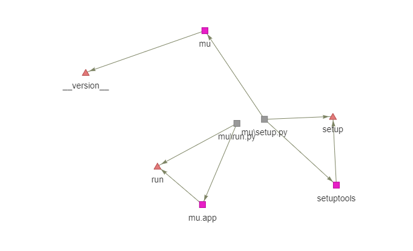
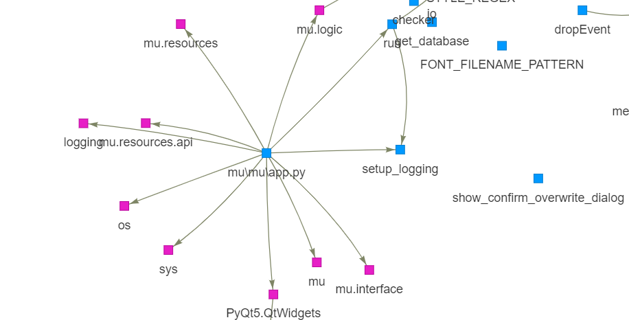
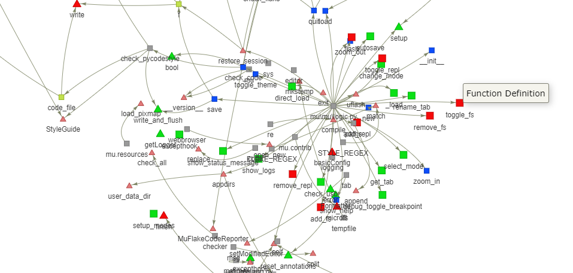

AC2: Towards Understanding Architectural Changes in Python Projects
Tool Description
AC2 is used to comprehend the architecture changes in a software system over multiple releases for python projects. Many open source repositories have faster release cycles. More releases in less time leads to frequent changes in the system. Understanding the impact of these regular changes in the term of architecture is important as it will decide the system stability. Therefore comprehending architectural changes visually allows the user to get a better understanding of the growing complexity of their software.
Installation
From Github
Clone or download this github repository:
git clone https://github.com/dheerajrox/AC2.git
Get into the main directory:
cd AC2/src/main
Install the requirements:
pip install -r requirements.txt
To start the server use the following command:
python main.py
Then, open your browser to 'http://localhost:5000/'
Approach diagram
AC2 uses call and collaboration graphs to represent architecture as a structure consisting of different components, and their interactions. It compares the changes in the architecture between different versions by visualizing it in a modular, hierarchical, and in an interactive manner.
Features

AC2 display four different types of views:
-
Directory View: It showcases the architectural changes at a higher level of abstraction. It shows a hierarchical view describing the changes in the project's directories and file structure.

-
Call Graph View: It displays the interaction between subroutines. Functions definition and calls are the architectural components for this view. The call graph generated is for the specific directory which the user is exploring, not for the whole project.

-
Collaboration View: In this view, files, class definitions, and modules are considered as architectural components. Similar to call graphs, the collaboration graph generated is for the specific directory which the user is exploring.

-
Integrated View: It displays the combination of both call and collaboration graphs. This view gives an overall detailed view of the specific directory consisting of components, such as files, function definition, function calls, class definition, and modules.

Uses
- Many open source repositories are having faster release cycles. More releases in less time leads to frequent changes in the system. Understanding the impact of these regular changes in the term of architecture is important as it will decide the system stability. Therefore comprehending architectural changes visually allows the user to get a better understanding of the growing complexity of their software.
- The users such as maintainers and Developers/Collaborators of the repositories can see the architectural changes over multiple releases and they can compare two releases at a time.
- Architectural components like function definition, function calls, class, files, directories, modules are used in different views mentioned above. Comparing these two different releases allows them to comprehend the way the software is evolved are what components are included and removed during this process.
Metrics used in AC2
A2A (Architecture-to-architecture): It gives the similarity measure of the component-level changes between thearchitectures between two releases. We modified the original A2A metric in the context of AC2 tool to get the following metrics:
- Architectural Similarity: It is calculated using directory viewwhere directory is considered as a component and files as its entities.
- Functional Similarity: We use call graphs to calculate the funcitonal similarity in which function calls and definitions are considered as entities.
- Class Similarity: For this metric, we use collaboration graphs, the class definitions are considered as the entities.
- Module Similarity: Similarily we use modules as entities for this metric.